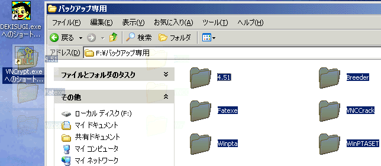
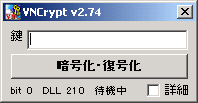
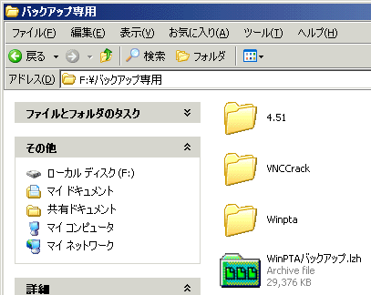
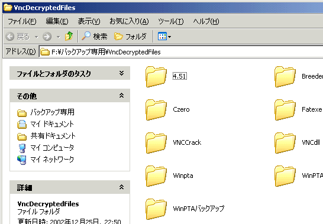
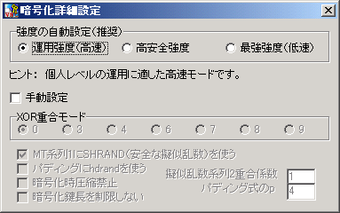
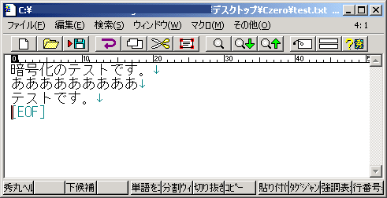
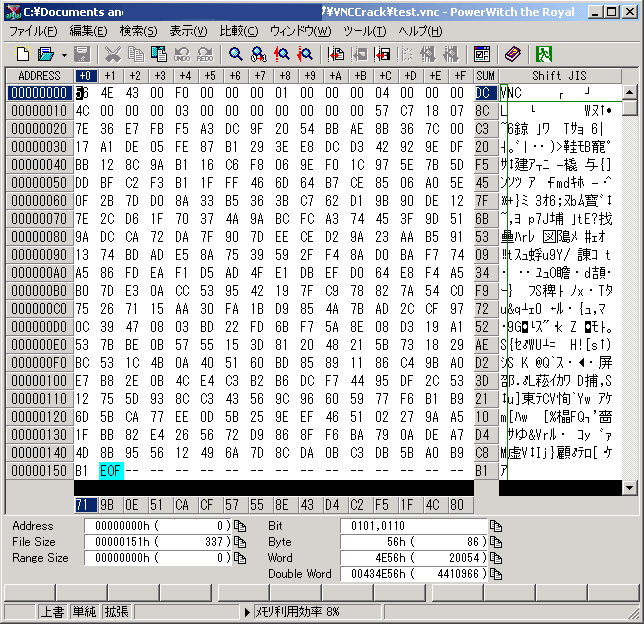

VNCrypt （LZH圧縮解凍機能付・高強度暗号化/復号ソフト）v3.70 とつげき東北 ホーム
VNCrypt （LZH圧縮解凍機能付・高強度暗号化/復号ソフト）v3.70 とつげき東北 ホーム
動作環境：
WINDOWS95とその上位互換OS。Windows98、Windows2000、WindowsXpで動作確認済。CPUはPentium以上互換。
開発環境：
Borland C++ Builder Professional Version5.0

説明
任意のファイルやフォルダを圧縮して、暗号化・復号するソフトです。
これによって、「鍵」を知らない他人から、ファイルの内容を保護することができます。
また、暗号化の前段階としてLZH圧縮を行いますので、複数のファイル・フォルダをまとめて、コンパクトにかつ堅牢に保存することができます。
一般的な共通鍵暗号法においてしばしば用いられる128bit～256bitよりもはるかに長い、16000bitを超える鍵長を用いることができます（長い鍵長の使用は、日本国内使用が明らかな場合のみ）。
市販の暗号ソフトやフリーの暗号ソフトの多くより高速です。
完全な乱数列生成ルーチンhdrand.cと、安全な擬似乱数生成ルーチンSHRAND、MersenneTwister（MT）擬似乱数の超長周期性と、SHAハッシュ（SHA-1はアメリカ政府の標準ハッシュ関数です）に基づく、非常に強力なストリーム方式共有鍵暗号システムです。
本製品は現段階でフリーソフトです。
使用前に必ず利用規約に同意してください。同意せずに利用・配布・再配布等をすることを一切禁止します。
このプログラムを使用・配布したことによって生じたいかなる損害にも、とつげき東北は責任を負いません。使用者の責任で使うこと。
VNCryptダウンロード（自己解凍書庫版 v3.69）
解凍機能を持ったソフトなのに、使うために解凍ソフトがいるというのも変なので(笑)、自己解凍書庫版も用意しました。
このソフトの実行には、同梱されている以下のファイルが必要です。
UNLHA32.dll（Micco氏）UNLHA32.dllのバンドルについてはMicco氏の許可を得ています。
VNCrypt.DLL（とつげき東北）
ソフトの使い方
・手軽なLZH圧縮ソフト・展開ソフトとしての利用
ファイルやフォルダをドラッグドロップして「暗号化」を押すだけで、それらのファイル・フォルダをまとめてLZH圧縮ファイルにすることができます（鍵を入力しない場合）。
LZHファイルは、関連付けを行っておくことで、ダブルクリックするだけで展開できるようになります（もちろん、ドラッグドロップして「復号」しても展開できますが）。
また、展開したフォルダは自動的にエクスプローラから開かれるため「どこに展開されたかわからない」ような事態を避けることができます。
圧縮・解凍の作業においてもっとも面倒なのはファイル名の入力ですが、このソフトはどちらの操作にも、ファイル名の入力などの作業が一切不要で、非常に手軽です。
・便利で強力な暗号ソフトとしての利用
「鍵」を入力して同様の操作を行った場合、ファイルやフォルダをLZH圧縮した後に、VNC暗号化します（VNC暗号ファイルであれば復号します）。
フォルダの内容を丸ごと安全に・コンパクトに保存することが可能です。
鍵として英字だけでなく日本語を使うことができます。
このソフトで指定できる鍵長は16000bitを超えますので、解読不可能レベルの強力な暗号化を行うことができます（ただし、日本国内での使用に限定されることが明らかでない場合は、鍵長は制限されます）。
LZH展開時と同様に、復号したフォルダは自動的にエクスプローラから開かれるため「どこに復号されたかわからない」ような事態を避けることができます。
使用例：

VNCrypt上に、圧縮または暗号化したい単数・複数のフォルダをドラッグドロップします。
（この例ではショートカット上にドラッグドロップしていますが、下写真のウインドウ上にドラッグドロップしてもかまいません）

この画面で「暗号化・復号」ボタンを押します。
鍵が指定されていれば「暗号化」を行います。指定されていなければ、単にファイルをLZH圧縮して1つのファイルに出力します。

このように、LZH圧縮ファイル（VNC暗号ファイル）が作られます。
同梱の「VNCSetup.exe」を使うと、VNCファイルとLZHファイルを、VNCrypt.exeに関連付けしておくことができます。
関連付けしてある場合、この「WinPTAバックアップ.lzh」をダブルクリックするだけで、

このように展開され、そのフォルダが開かれます（鍵を指定して暗号化・復号する場合の操作も、「鍵を入力する」点を除いて同様です）。
展開または復号したいファイル（.lzhや.vnc）を、このソフト上にドラッグドロップして「暗号化・復号」ボタンを押すことでも同様の結果が得られます。
詳細設定についての説明

暗号化の詳細設定を行います。
強度の自動設定（推奨）
強度と速度のバランスを選択すると、コンピュータが自動的にそれに合ったオプションを指定してくれます。
通常のユーザは自動設定を用いてください。
高速に使いたい場合は「運用強度」を選択し、より安全に使いたい場合は「高安全強度」を選択します。
「最強強度」にすると、高安全強度よりも強力にはなりますが、実行時間が非常に大きくなるので効率的とは言えません。
以下に、50.8メガバイトのファイルを、圧縮・展開をせずに各モードで鍵「0」で暗号化・復号するのにかかった時間計測試験の資料を公開しておきます。
| モード |
暗号化 |
復号 |
| 運用強度 |
6秒 |
6秒 |
| 高安全強度 |
23秒 |
23秒 |
| 最強強度 |
54秒 |
53秒 |
ヒントに表示されるように、個人的な目的で使用する場合には「運用強度」で充分だと思われます。
企業秘密情報の暗号化などには「高安全強度」を用いる方が良いでしょう。
（v3.55β以降では、運用レベルでも安全な新しい技術を導入しています。50.8メガバイトのファイルの暗号化にかかった時間は、初期化時間を含めて約6秒で、Athron1GHz程度で67メガビット/sec以上の処理速度を持っています）
現段階で「最強強度」を使う必要はまずないと考えてください。
手動設定
手動設定にすると、暗号化の各オプションを詳細に指定できます。それらについては、後に説明しますが、通常のユーザが使用することによるメリットはまずありません。
暗号例
以下のようなテキストファイルを、鍵「0000」で暗号化してみました。

結果は、下図のようになりました。

（これはバージョン3.02で暗号化されたファイルです。現在のバージョンと異なる可能性もあります）
この暗号文はこちらにあります。鍵「0000」で復号してみてください。
暗号化ファイルの属性を決定するための、ファイル先頭のいくつかのデータを除き（以下先頭領域は除いて「暗号文」と呼ぶ）、暗号文ビットには0と1が等確率で出現します。
また、暗号文ビットの、対応する原文ビットとの相関係数は0です。
暗号化のたびに、同じ原文は異なる文字数・異なるデータの暗号文に暗号化され、かつデータビット同士の相関係数は0です。
鍵ビットの異なる1ビットの存在は、全ての暗号文ビットに対して平均ビット反転率50％を与えます。
この暗号システムでは、かなり強力な鍵長（例えば10000bit）を、簡単に扱うことが可能です。
ソフトの表示形式上、鍵長に（充分な長さにおいて）制限が設けられています。
暗号機能としては、圧縮ソフトなどにオマケとして付いているものなどとは比較にならず強力です。
なお、上記の例ではファイルサイズがかなり大きくなっていますが、これは原文の文字数をある程度不明にするための冗長データが付加されているためです。
現在のバージョンである程度大きなファイルに対して使用する場合、暗号文のデータ長は原文のデータ長よりも平均的にはかなり短くなります。
基本的な暗号システム
システム：
完全な乱数列生成ルーチンhdrand.cと、安全な擬似乱数生成ルーチンSHRAND、MersenneTwister（MT）擬似乱数の超長周期性と、SHAハッシュ（SHA-1はアメリカ政府の標準ハッシュ関数です）に基づく、非常に強力なストリーム方式共有鍵暗号システムです。
この暗号法は理論上、長い鍵長を簡単に実現できます（19936bitまでは実装上でさえ単に変数を変更するだけです）。
暗号化：
とつげき東北作成のhdrand.cを用いて完全な乱数列を生成し、その乱数列から、MersenneTwister（MT）擬似乱数の種を得ます。
この段階で、構造上MTの種は完全にランダムで解読は不可能です。
次に、MT擬似乱数の種を、鍵とのXORによって暗号化します。これを「暗号化されたMT種」と呼びます。
暗号化されたMT種自体は完全にランダムですから、鍵を知らない他人がこれを予測したり解読することはできません。
暗号化されたMT種は目的とする暗号化ファイルに記録されます。
SHRANDの技術を用いて、MT擬似乱数から安全な擬似乱数SHRANDを得ます。
得られた擬似乱数SHRANDから、ランダム個数のランダムデータを与えます（パディング）。
擬似乱数SHRANDと原文とをXOR処理して、暗号文として暗号化ファイルに追加します。
復号：
ファイルから、暗号化されたMT種を得ます。
鍵を知る正規ユーザは、鍵と暗号化されたMT種から、真の擬似乱数を得て原文を得ます。
強度：
19936bitの共通鍵暗号は、現代的な暗号の強度として充分でしょう。
SHRANDの安全性に関しては、SHRANDのページで解説します。
鍵の1bitのずれは復号文を完全にでたらめにします。
同じ原文から、毎回完全に異なった（全てのビットの反転率が50％の）暗号文を生成します。
VNCryptフォーマットの構造・暗号アルゴリズム公開（簡易版。正式版は準備中）
VNCryptフォーマット
FAQ（ソフトウェア利用上の留意点）
「大きなフォルダを暗号化しようとするとうまくいきませんが？」
FAT32ファイルシステムの下では1つのファイルのファイルサイズが4ギガを超えるような場合、当該のファイルを正常に扱うことができません。
フォルダを分割圧縮するようなソフトと組み合わせてご利用ください。
なお、NTFSファイルシステムの場合この制限はありません。
自分のドライブのファイルシステムは、ドライブのプロパティで確認することができます。
また、圧縮しても4ギガバイトを超えるサイズのファイルは、現バージョンでは扱うことができません。
「ドライブ全体を圧縮・暗号化できますか？」
今のところ C:\ を入力ファイルとして、ドライブ全体を暗号化するような動作はできません。
C:\ 上の全てのファイルとフォルダをドラッグドロップして使うなど工夫してください。
「各オプションと強度・速度の関係について詳しく教えてください」
全体的な結論としては、「強度を重視する場合は、鍵長を増やして、SHAを使う」「実行速度を重視して実用的に運用したい場合は、デフォルトのまま使う」ことが推奨されます。
以下にそのことについて説明します。
鍵長についてと鍵長の制限をしないスイッチについて：
鍵長は暗号の強度にもっとも強く影響を与えます。
1文字増えるだけで強度は256倍程度になります。
8文字で運用することを強く推奨します。
通常のユーザは「鍵長の制限をしない」スイッチを用いることができませんが、日本国内での使用が明らかな法人・個人に対しては、鍵長16384ビットでの使用を許可します。
例えば、機能制限のないバージョンをCD-Rに焼いてお送りするなどの方法です（別途料金が必要）。メールで相談してください。
鍵長の増加は、ファイルサイズが小さい場合には線形に暗号化時間の増大につながりますが、ファイルサイズが大きくなってくるとほとんど影響を与えなくなります。
また復号においては鍵長による実行速度の低下はほとんどありません。
XOR重合モード（SHAモード）について：
暗号のシステム上、SHAを用いることはセキュリティを高めます。
XORのモードとSHAとの関係は以下のようです。
0 SHAを使用せずXOR演算だけを行う
1 SHA-1を使用する
2 SHA-512を使用する
3 SHA-1を使用する（速度向上版）
4 SHA-512を使用する（速度向上版）
5 SHA-1とSHA-512を同時に使用する
6 SHA-1とSHA-512にさらに擬似乱数をXORする
7 3の最適化高速版
8 4の最適化高速版
9 6の最適化高速版
SHAを利用しない場合、SHRAND技術を用いて得られた「安全な乱数」をもとに暗号化処理を行います。この処理はSHAを用いる場合と比較して劇的に高速ではありますが、万一、今後SHRANDに「穴」が見つかった場合、暗号が破られてしまいます。
SHAを利用していれば、SHAの安全性に基づいて、その場合でも最低80ビット（SHA-512であれば256ビット）の安全性が保たれます。256ビットの安全性とは、企業秘密レベルで現在使用されているうちで最高クラスの強度と同程度です。
ただし、SHSによると「SHA-1 is currently the
only FIPS-approved method for secure hashing.」とのことなので、XORのモード5およびモード6では、SHA-512の安全性が万一保障されなくなった場合のために、SHA-1を併用するようになっています。
望む安全性を「最も安全」にしたい場合はSHAを利用すべきです。またファイルサイズが大きくない場合や、暗号化にかかる時間が問題にならない場合は利用しても良いでしょう。
SHRANDの安全性を信頼するなら、動作速度を極端に遅くするSHAは使用しないで大丈夫です。
これは用途に合わせてユーザが慎重に選択してください。
「家族にエロ画像をばれなくしたい」程度の目的での暗号化でSHAを用いるのは、アリを殺すために原子爆弾を使うようなものだと思います。
MT1系列にSHRANDを用いることについて：
v3.40以降では、MT擬似乱数系列ではなく、SHRANDを用いた安全な擬似乱数系列を暗号化に用います。
SHRANDを使うことで、パフォーマンスをほとんど落とすことなく安全な暗号化処理を行うことができます。
SHRANDは必ず使うようにしてください。
圧縮について：
ファイル圧縮は禁止しないことを推奨します。ファイル圧縮をすることは、強度を若干改善します。
大きなサイズのファイルが対象の場合、暗号化よりも圧縮に時間がかかるため、ハードディスク容量は大きいが時間を節約したい、という場合は圧縮禁止にしてもかまいません。
パディングにhdrandを用いることについて：
パディングにhdrandを用いることで強化される強度は、ファイルのサイズに関する情報と、キーサイズに関する情報についてだけです。
暗号文のうちの任意の1文字が解読される確率は、この設定によっては強化されません。
hdrandを用いない場合は、システムクロックなどを種とする一般的な擬似乱数が使用されます。
hdrandを用いていない暗号ファイルを一流の盗聴者が解読した場合、ファイルサイズやキーサイズは解読される恐れがあります。
キーサイズが特定された場合、この暗号の強度は全体として1/2になります（最大鍵長の場合）。
hdrandを用いてパディングを行う場合に強化される度合いは高く、パディング数が大きい場合、元ファイルサイズ等を確定することは不可能レベルに困難になります。
パディングサイズが大きい場合は、hdrandを用いることで速度はかなり低下します。
結論としては、ファイルサイズがダイレクトに重要な情報になったりしないように留意した上で、hdrandを使ったパディングを行わない設定で用いることが最適だと思われます。
企業最重要機密のやりとりで「Yes」「No」の2択（2文字か3文字かだけで内容がばれる）にするようなことをしないことです。
擬似乱数2の重合係数について：
詳細はVNCryptフォーマットを参照してください。
SHRANDを使えるバージョンでは、SHAを使う場合に用いるビット列のサイズ指定以外に用いることはありません。
SHAを使わず、SHRANDを使うモード：（運用強度など）
ここでの指定は無効（暗号化と無関係）です。
SHAを使わず、SHRANDを使わないモード：（現在、このモードは使うべきではありません）
このモードにおいて、VNCryptは、2系列のMT擬似乱数同士のいくつかの排他的論理和をとって「暗号化に使う擬似乱数」として使っています。
1回の「暗号化に使う擬似乱数」生成のために掛け合わせるMT擬似乱数（2系列目、1系列目は常に1つ）値の数です。
先に述べた「MTの先読み」が仮にできたとしても、順々にしか先読みできないのであれば、2系列を重合することで、2^19937-1通りのうちのどこ同士が重合されているかを別にうまい方法で解読できなければ暗号は安全ということになります。またいくつもの乱数を重合しているならば、それだけ計算量が増加することになります。
SHAほどではありませんが、この値を大きくすることで、セキュリティを向上させられることは確かです。
SHAを使うモード：
いくつのMT擬似乱数を使ってSHAハッシュを作るかの個数になります。
基本的にはSHAを使わないモードの説明と同様です。
ただし、SHAのビット数より多いビット数になるように調整すべきでしょう。
つまりSHA-1なら20以上、SHA-512なら64以上にすることが望ましいです。
共通する特徴：
VNCryptの暗号化・復号の計算の大部分は「擬似乱数の生成」ですので、この数を大きくすることは、ダイレクトに実行速度に影響を与えます。
ある程度以上の大きさのファイルに対しては、この値を大きくすることによる安全性の向上は、実行速度の低下と比して割に合わないものとなるでしょう。
パディング式のpについて：
詳細はVNCryptフォーマットで確認してください。
pを大きくすることによって強化される点は、ファイルサイズ・キーサイズ解読に対する堅牢さだけです。暗号システム全体の強度とはほとんど無関係と言っても良いでしょう。
反面、hdrandを用いたパディングの場合、実行速度にかなり影響を与えます。
ファイルサイズがダイレクトに重要な情報になったりしないように留意した上で、デフォルト状態で使用することを推奨します。
注意点
・暗号化に関する注意
重要なファイルを暗号化し、鍵を忘れてしまっても、とつげき東北にはどうすることもできませんので（できたら暗号ソフトじゃない）充分注意してください。
また、鍵のビット長は充分に長く取ってください。0～9だけしか使わないようなことはしないでください。
重要なファイルの暗号化の際には、0～9、a～z、A～Z、-、.の各々の文字から無作為に選び、60ビットを超えるように鍵を作るべきです。
短い鍵長の暗号文の危険度については、こちらで実際にクラッキングツールを開発して検証しています。
バージョン情報（赤字のDLL指定は、全ての機能を利用するために最低限必要なDLLバージョンです）
v0.10 試験的公開版。インターフェイスなど全く考慮されていません（笑）。
v0.20 引き続き試験版。ドラッグ＆ドロップに対応した。暗号化か復号かを自動判別するようにした。名称を変更した。
v0.30 元ファイル名を記憶するように仕様変更、それに伴いユーザインターフェイス等変更。VNCフォーマット0.91に変更。
v0.40 暗号化・復号ルーチンをDLLにして分離独立させた。
v0.50 DLLのバージョンアップ。
v1.00 正式公開版（これ以降のバージョンで暗号化されたものは、原則的に最新版で復号できるようバージョンアップします）
v1.10 VNCファイルを関連付けできるようになった。
v1.20 起動時間を短縮。動作状況を表示。アイコンデザインの変更。
v1.30 乱数生成を高速化。
v1.40 パディング数や重合係数を可変にした。
v2.00 圧縮機能を搭載（UNLHA32を利用）（DLL1.60）。
v2.10 UIの改良
v2.20 既にあるフォルダをごみ箱に移動して展開するようにした。
v2.21 起動時にタブを鍵の入力欄に設定するよう変更。
v2.30 実行コードをPentium以上互換に変更。
v2.31 UIの改良。
v2.32 UIの改良。
v2.40 鍵として日本語等も使えるようになった。
v2.41 UIの改良。
v2.50 LZHファイルの関連付けを可能にし、LZHファイルを手軽に展開するモードを付加した（DLL1.80）。
v2.51 関連付け等の作業を行う設定ファイルと本体ファイルとを分離した。
v2.60 複数ファイル・フォルダの暗号化に対応（DLL1.90）。
v2.61 LZH展開時の若干の不具合を修正。
v2.70 鍵を指定しない場合にLZH圧縮を行うようにした（DLL2.00）。
v2.72 v2.70の修正版。
v2.73 UI等の調整。
v2.74 UI等の調整。
v2.75 暗号化オプションの制限を緩和。
v3.00 暗号化の擬似乱数生成時にSHA-1を用いるモード（セキュアモード）を搭載（DLL2.20）。
v3.01 UI等の調整（DLL2.30）。v3.01には不具合があります。このバージョンで暗号化しないでください。
ｖ3.02 DLLのバグフィクス（DLL2.40）。
v3.03 UI等の調整。
v3.10 重合（擬似乱数のハッシュ）に試験的にSHA-512を実装（DLL2.60）。
v3.11 処理中にカーソルを砂時計にするなど、UIの調整。
v3.12 単体のファイルを圧縮なしで暗号化できない不具合を修正。UIの調整。
v3.13 暗号強度の設定を手軽にした（DLL2.70）。
v3.20 一部の暗号化で設定が反映されない不具合を修正（DLL2.80）。
v3.21 UIの調整。
v3.22 UIの調整。
v3.30 最適化高速版のモードを導入、UIの改善（DLL3.00）。
v3.31 UIの改良。
v3.40β SHRANDの導入、MT1の代わりにSHRANDを用いる（DLL3.30）。
v3.50β 暗号化方式をSHRAND主体に変更。
v3.55β SHRANDのルーチンを改良・高速化（DLL4.00）。
v3.56β 各種調整。
v3.57β 各種調整。
v3.58β 各種調整。
v3.59β 各種調整。
v3.60 SHRANDを用いたバージョンの正式バージョン（DLL4.01）。
v3.61 UIの調整。
v3.65 使用期限延長。
v3.66 微調整。
v3.67 内部調整。
v3.68 ファイル名をショートファイル名で渡した時の不具合を修正。
v3.69 Setupの関連付けの不具合を修正。
v3.70 使用期限延長。
参考資料＆使わせていただいたテクノロジ
MersenneTwister（MT）擬似乱数 超長周期擬似乱数MTのページ。
SecureHashStandard SHAに関する資料。
とってもごはん SHA-512実装にあたっての大変有益な情報（ソース）。ただしこのソフトでは、このページで解説されている、高度なMMX最適化の手法は用いていません。
今見るとMTの良質なソースまでも置いてあるんですね・・・先に見ておけば楽＆高速だったのに(
≧∇≦)ﾌﾞﾊﾊﾊ! 本当にすごいページだ。
私はこのページ作者ほどの技術は全くないため、MTにしてもSHAにしても全然最適化できてない自作ソースを使っていますがあしからず・・・。
DIEHARD 乱数評価ツール。
Micco'sHomePage UNLHA32.dll関連。
IBM記事-暗号
IBM記事-乱数
暗号化ツール、暗号化ソフト、フリーソフト、フリーウェア、暗号ソフト、暗号ツール。
LZH圧縮、LZH解凍を行えます。